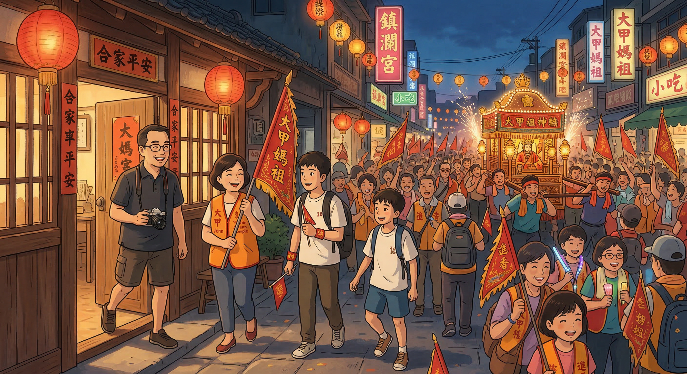
一大早，一家人就在家門口集合。爸爸拿著相機，媽媽拿著香旗，兩個兒子揹著背包。
棉花糖興奮地跳上跳下，阿布吉雖然表情淡淡的，但眼神裡也透露著期待。

一行人來到大甲鎮瀾宮前，只見人山人海，熱鬧非凡。媽媽雙手拿著香旗，一臉虔誠地仰望著媽祖廟。
「每年都來，但每次都很感動。」媽媽說。

晚上 10 點 05 分，起駕時刻到了。全家跪拜祈福，媽媽眼眶泛淚，弟弟學著媽媽的動作，哥哥扶著弟弟。
鞭炮聲響起，神轎開始移動，場面莊嚴神聖。
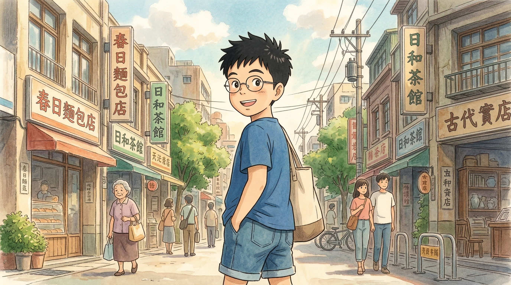
途經犁頭店傳統老街，弟弟好奇觀看傳統農具店，媽媽指著老店鋪講故事，哥哥聽得入神。

路上弟弟走累了，哥哥背著他繼續前行。哥哥雖然累但堅持背弟弟，弟弟摟著哥哥脖子開心笑。
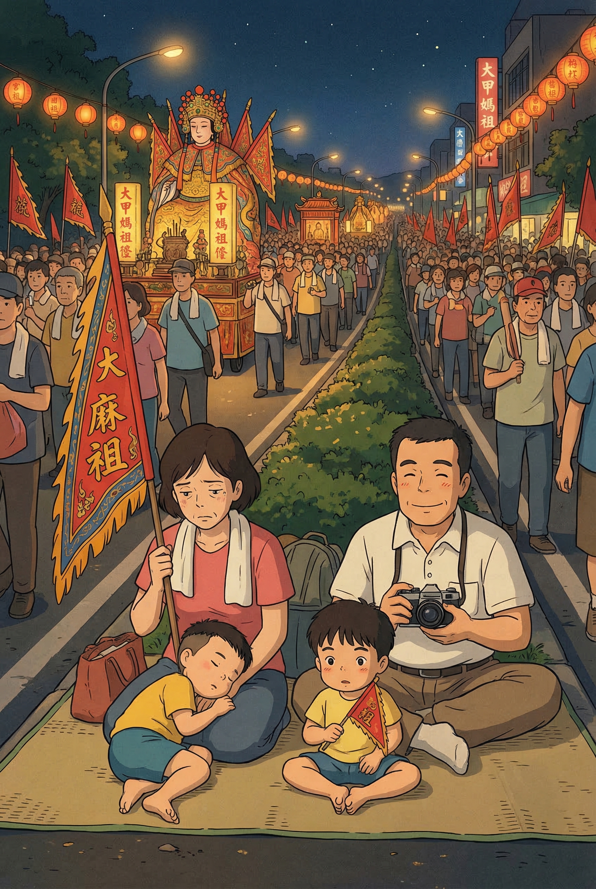
短暫休息補充水分，全家圍坐路邊，弟弟靠在哥哥肩上，媽媽遞水給爸爸，全家相視而笑。

第一天行程結束，抵達沙鹿住宿點。弟弟興奮地跳起來，哥哥幫忙拿行李。

晚上在住宿點休息回顧，弟弟分享今天最喜歡的部分，哥哥笑著聽，媽媽溫柔看著。
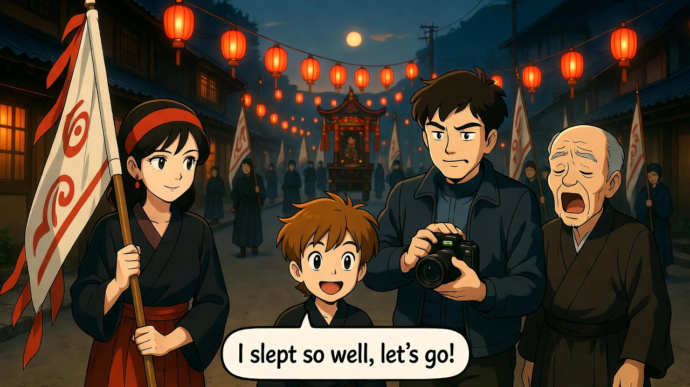
第二天清晨繼續旅程，弟弟還有點睏，哥哥鼓勵他，媽媽遞上早餐。
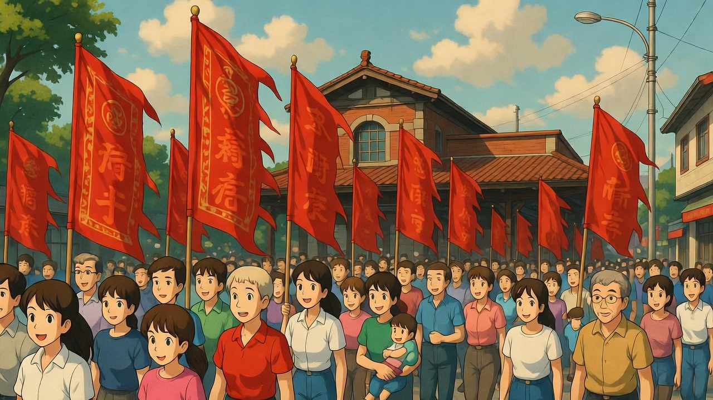
途經彰化火車站，哥哥講解火車站歷史，弟弟聽得入迷，爸爸拍照記錄。
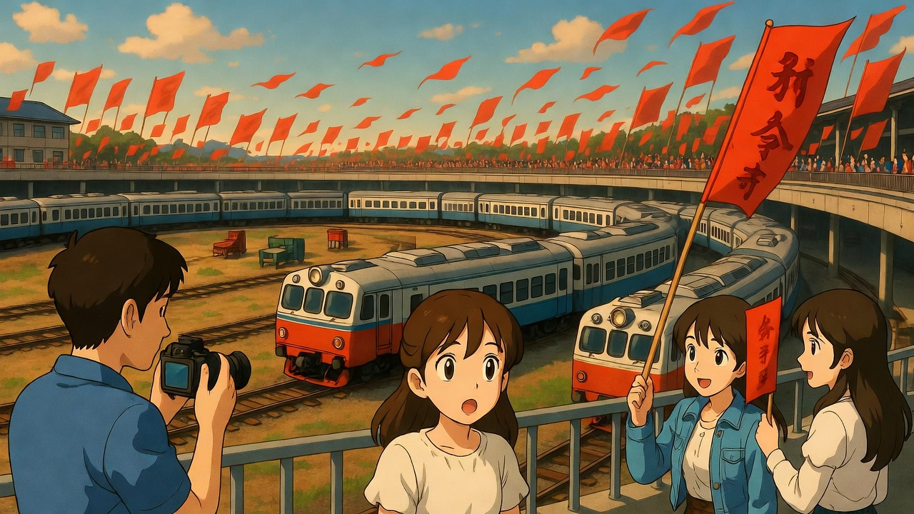
參觀扇形車庫，弟弟驚訝地張大嘴巴，哥哥耐心解釋鐵道文化。

抵達南瑤宮參拜，媽媽虔誠祈禱，弟弟學著媽媽的動作，哥哥扶著弟弟。
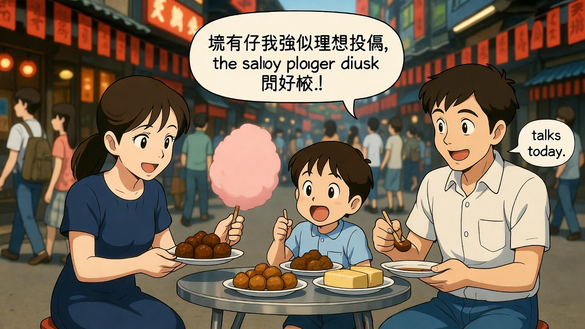
品嚐彰化特色美食肉圓，弟弟吃得滿嘴醬汁，哥哥笑著幫他擦嘴。

繼續下午的行程，弟弟雖然累但堅持，哥哥鼓勵他，媽媽加油。
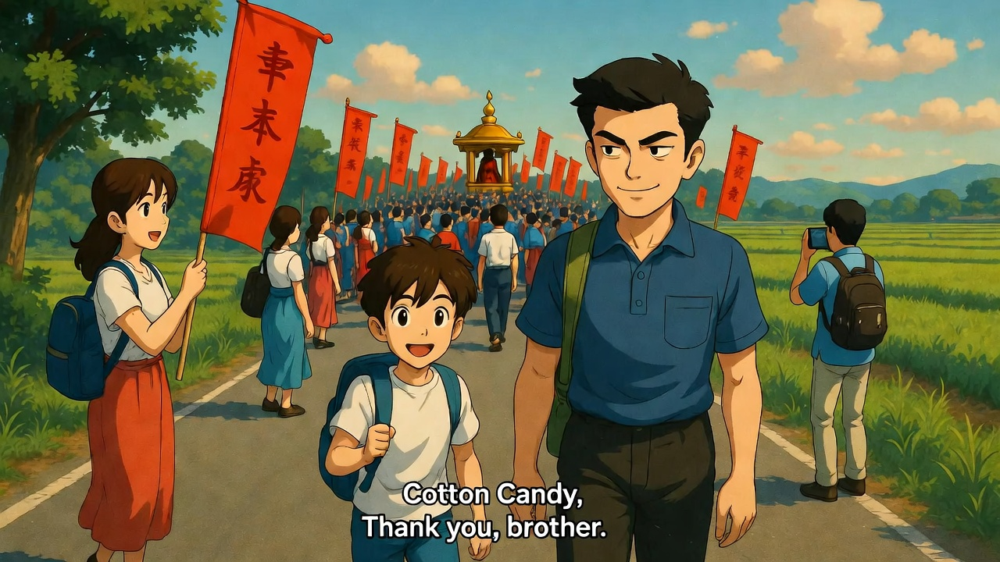
家人互相攙扶展現親情，弟弟靠在哥哥肩上，媽媽溫柔看著。
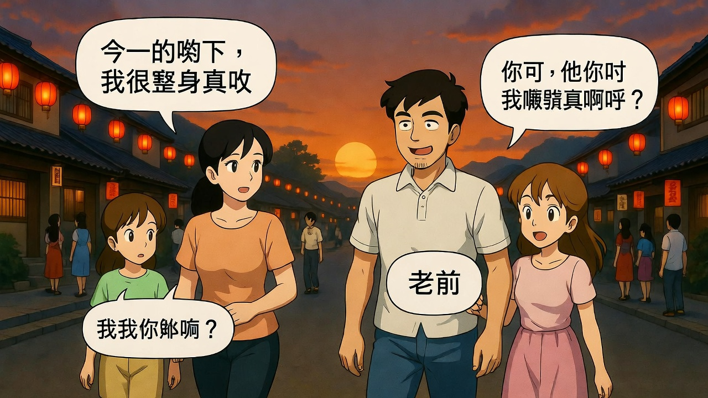
傍晚返回住宿點，弟弟靠在媽媽身邊，哥哥幫忙拿行李，媽媽微笑。

第二天晚上休息回顧，弟弟分享今天的感動，哥哥聽得認真，媽媽溫柔。

第三天凌晨 4 點起床準備，弟弟雖然睏但堅定，哥哥鼓勵他。
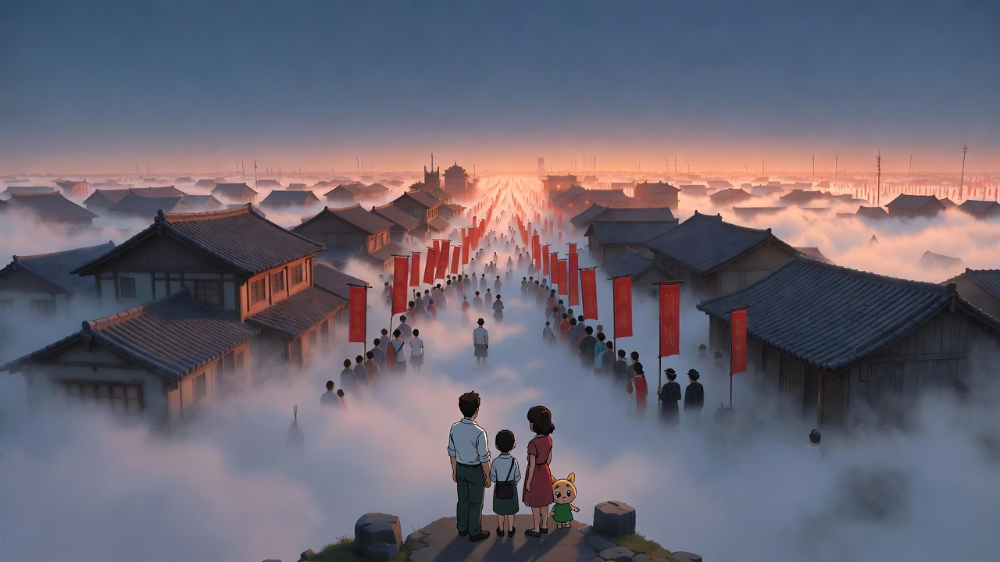
抵達龍井集合點與其他香客會合，弟弟興奮地跟其他小朋友打招呼。

晨光中繼續前行，弟弟蹦蹦跳跳，哥哥扶著他，媽媽微笑。
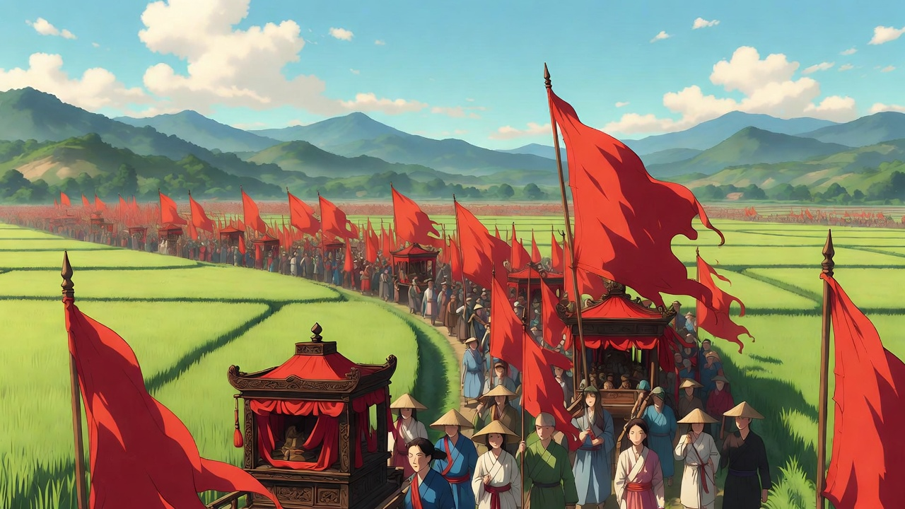
途經田野欣賞自然風光，弟弟指著遠方的山，哥哥解釋。

抵達清水紫雲巖參拜，媽媽虔誠祈禱，弟弟學著媽媽，哥哥扶著弟弟。

下午輕鬆時刻，弟弟笑得開心，哥哥講笑話，媽媽欣慰。

全家在路邊合影，弟弟比 YA 手勢，哥哥摟著他，媽媽微笑。

第三天中午結束上午行程，弟弟分享感受，哥哥聽著，媽媽欣慰。
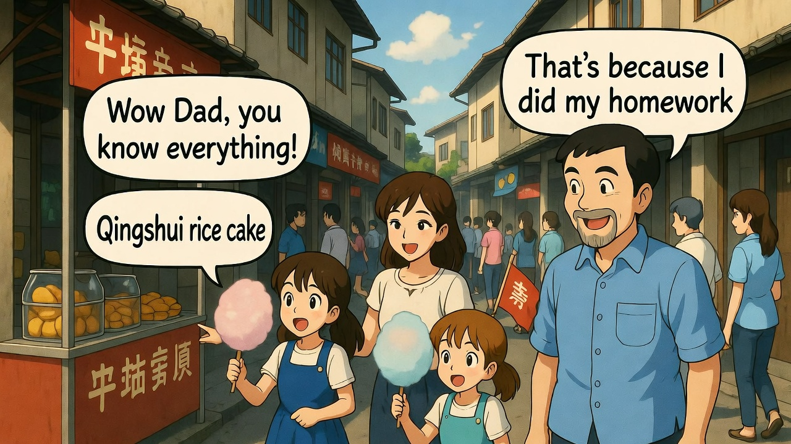
下午自由時間逛清水，弟弟好奇看商店，哥哥解釋，媽媽微笑。
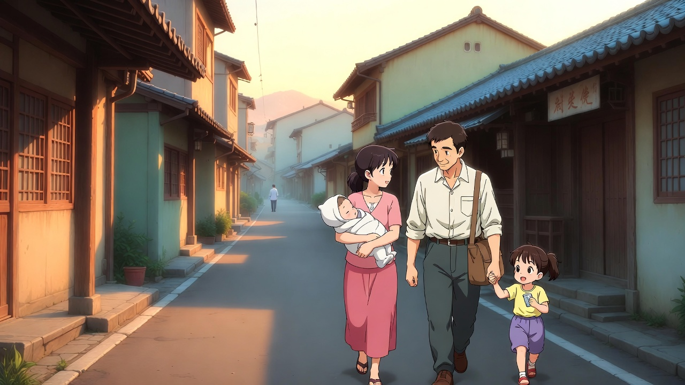
第四天最終日，弟弟分享感受，哥哥鼓勵，媽媽溫柔。

從台中港開始最後一段，弟弟興奮，哥哥扶著他，媽媽微笑。
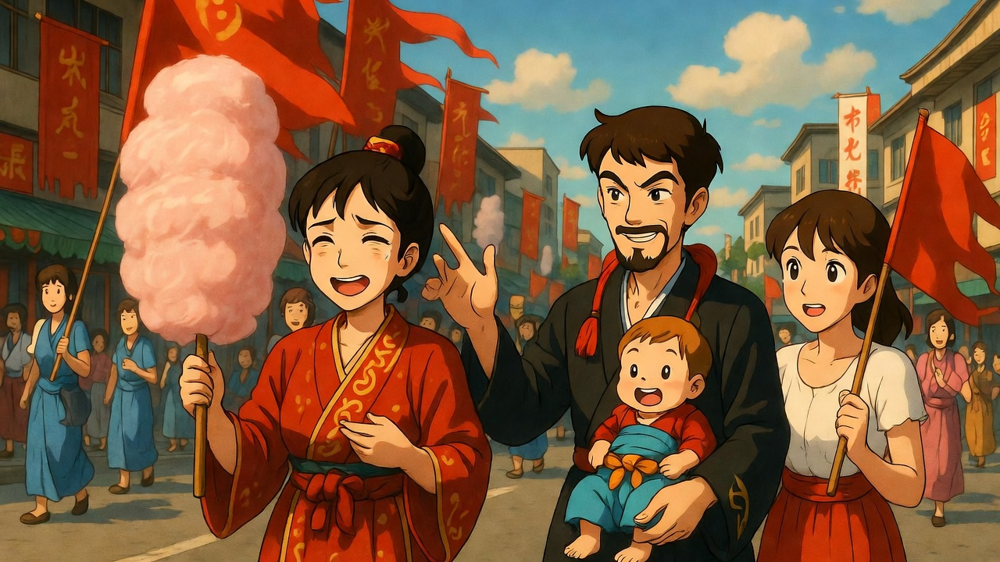
最後一段路程，弟弟雖然累但堅持，哥哥鼓勵，媽媽加油。

回到大甲鎮瀾宮，全家跪拜，媽媽眼眶泛淚，弟弟學著媽媽，哥哥扶著弟弟。

感謝媽祖保佑，媽媽虔誠祈禱，弟弟學著媽媽，哥哥扶著弟弟。

哥哥阿布吉感性時刻，分享這四天的感悟，弟弟聽得認真，媽媽欣慰。

弟弟棉花糖許下願望，哥哥微笑，媽媽溫柔，爸爸記錄。